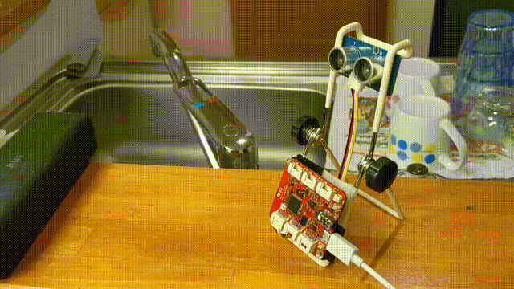
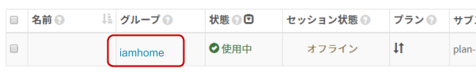
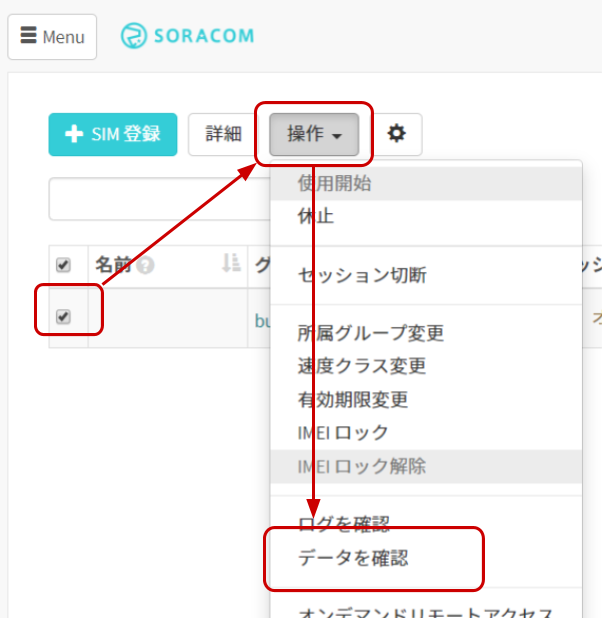
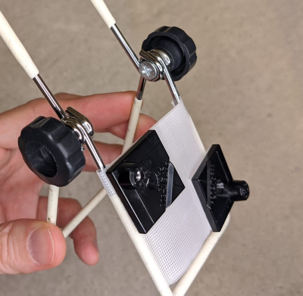

レシピ難易度：★★★★☆
超音波距離センサーを活用して「手のひらをかざすと反応する簡易ジェスチャーデバイス」を作り、帰宅を知らせる仕組みを作ります。センサーを制御するマイコンには LTE モデム搭載済みプロトタイプ向けデバイス Wio LTE JP Version を使い、どのような場所からでもクラウド通信できるデバイスとして作り上げます。

本レシピは、動画コンテンツも用意しております。本レシピの動いている様子を、映像で確認できますので、ぜひ動画もご覧ください。
デバイス解説回
クラウド開発回
応用編
本レシピを行うのに必要な時間、概算費用
本レシピは以下の通りです。
- 必要な時間: 約2時間30分
- 概算費用: 約14,100円
※ 概算費用: ハードウェアや SORACOM を始めとした各種サービスの概ねの費用 (税や送料などの付帯費用や無料枠適用は考慮しないものとしています)
このコンテンツの進め方
ページの内容を読み、また作業を行ったら右下の［Next］を押して次のステップへ進みます。また、［Back］を使って戻ったり、左のナビゲーションメニューでもページの移動が可能です。
左上の［×］を押してコンテンツを終了することができます。また、ページを開きなおすことで再開できます。ページのアドレスはブラウザの［履歴］メニューを利用してください。
本レシピを行うためには以下のものをご用意ください。
ハードウェア
品名 | 数量 | 価格 | 購入先 | 備考 |
Grove IoT スターターキット for SORACOM(Wio LTE JP Version) | 1 | 15,980円 | キットの中には以下のものが含まれています。(それぞれを個別に準備しても構いません)
| |
開発用パソコン | 1 | ― | ― |
|
(必要な方のみ) USB 変換アダプタ | ― | ― | ― | Wio LTE とパソコンを USB ケーブルで接続する際に利用します。 パソコンに USB Type-A ポートがない場合はご用意ください。 1A 以上の電力が供給できるものを利用してください。(USB 3.0以上に対応していれば概ね安心です) |
※1 ※ 金額はレシピ作成時となります。ソラコムで販売している金額は税抜き・送料別です。
その他必要なもの
必要なもの | 費用 | 作成方法など |
SORACOM アカウント | 無料※ |
※ アカウント作成・維持の費用の料金です。
Wio LTE JP Version 設置用部材
本レシピ内では Wio LTE JP Version とGrove 超音波距離センサーモジュールを設置するための部材を紹介しています。ここに記載されているものは任意であり、特に準備をせずともレシピ自体は進めることができます。
品名 | 数量 | 価格 | 購入先 | 備考 |
スマートフォン スタンド | 1 | ― | ― | 100円ショップ等で見つけることができます。 |
貼り付けボス (M3 サイズ) | 2 | 約75円 (単価) | MonotaRO 等 | M3 というネジ穴サイズを受ける為のナットが埋まっています。裏面は両面テープなので、どこにでも "M3 ネジ穴" を設置できます。 Wio LTE JP Version のネジ穴は M3 で 2 つあります。 |
鍋小ネジ(ポリカーボネート / M3 長さ10mm) | 2 | 約11円 (単価) | MonotaRO 等 | M3 サイズのネジです。ポリカーボネート(樹脂)で出来ているため、ショートさせる危険もありません。 |
プラスドライバー | 1 | ― | ― | ネジ止め用です。 |
養生テープ等の幅広の物 | ― | ― | 貼り付けボスの土台に使いました。ともかく一つでもあると便利ですよね。 | |
両面テープ | ― | ― | ともかく家にあるものであれば良いでしょう。 | |
モバイルバッテリー | 1 | ― | Wio LTE 単独で動かすためなら必要です。 |
超音波センサーと Wio LTE JP Version (以下 Wio LTE) のみで、簡易ジェスチャーを実装してみます。
事前の確認
開発用パソコンに下の準備が整っているか確認します。整っていない場合は、先にセットアップを済ませてから、作業を続けることになります。
- Arduino IDE のセットアップ (済んでいない場合は Windows 編 もしくは macOS 編の作業を行ってください。約20分の作業です。)
- Wio LTE 開発環境のセットアップ (済んでいない場合は Windows 編 もしくは macOS 編の作業を行ってください。約70分の作業です。)
Wio LTE に超音波センサーモジュールを接続する
外観は以下の通りです。
超音波センサーモジュール | |
Wio LTE |
Wio LTE の接続先は D38 です。ボード上に "D38" と書いてあるのを確認したうえで、接続してください。
ライブラリのインストール
超音波センサーで利用できる通信ライブラリをインストールします。今回は GroveDriverPack というオープンソースライブラリを利用します。
［スケッチ］>［ライブラリをインクルード］>［ライブラリを管理...］をクリックします

※ 画面は macOS ですが、Windows も同様です。
"GroveDriverPack" をインストールする
ライブラリマネージャの一覧から GroveDriverPack (by Seeed K.K.) を選んで［インストール］をクリックします。
バージョンはインストール時における最新バージョンを選んでください。
インストールが終了したら［閉じる］をクリックします。
簡易ジェスチャーを実現するスケッチ
Arduino IDE を起動し［ファイル］>［新規ファイル］を開くと void setup() { から始まる「空のスケッチ」が表示されます。
一度スケッチの内容を削除してから、後述のスケッチで置き換えてください。
wiolte_gesture_only_by_ultrasonic.ino
/* See: https://soracom.github.io/iot-recipes/iamhome-by-wio-lte-ultrasonic-sensor/ */
/*
* Copyright (c) 2020 Kohei "Max" MATSUSHITA
* Released under the MIT license
* https://opensource.org/licenses/mit-license.php
*/
#include <WioLTEforArduino.h>
#define console SerialUSB
WioLTE Wio;
#include <GroveDriverPack.h>
GroveBoard Board;
GroveUltrasonicRanger Ranger(&Board.D38);
float state_change_distance = 200.0; // mm
unsigned long state_entry_min = 120; // ms
unsigned long state_entry_max = 500; // ms
int required_as_event = 2; // times
unsigned long event_timeout = 1800; // ms
void setup()
{
Wio.Init();
console.println("--- START");
Board.D38.Enable();
Ranger.Init();
}
#define MEASUREMENT_INTERVAL 80 // ms
boolean state = false;
boolean prev_state;
int state_change_counter = 0;
unsigned long state_entry_started_at_millis = 0;
unsigned long event_started_at_millis = 0;
void loop()
{
Ranger.Read();
float distance = Ranger.Distance;
console.print("distance:"); console.println(distance);
prev_state = state; /* keeping prev. loop value */
state = (distance <= state_change_distance); /* update by new value */
if (state && !prev_state) { /* entry */
Wio.LedSetRGB(16, 0, 0);
state_entry_started_at_millis = millis();
if (!state_change_counter) { /* begin of event */
event_started_at_millis = state_entry_started_at_millis;
}
}
unsigned long millis_while_leave = 0;
if (!state && prev_state) { /* leaved */
Wio.LedSetRGB(0, 0, 0);
millis_while_leave = millis() - state_entry_started_at_millis;
}
console.print("millis_while_leave:"); console.println(millis_while_leave);
if (state_entry_min <= millis_while_leave && millis_while_leave <= state_entry_max) {
state_change_counter++;
}
unsigned long millis_while_event = millis() - event_started_at_millis;
if (millis_while_event > event_timeout) {
state_change_counter = 0; /* Reset because it was not within the period */
}
if (state_change_counter == required_as_event && millis_while_event <= event_timeout) {
/* Implementation block for user at event firing */
Wio.LedSetRGB(16, 16, 16);
delay(1000);
Wio.LedSetRGB(0, 0, 0);
state_change_counter = 0; /* DONT REMOVE (reset for next tick) */
}
delay(MEASUREMENT_INTERVAL);
}マイコンボードに書き込む
Arduino IDE で ボタンをクリックします。ボードへの書き込みが完了しました。と表示されたら正常終了です。
ボタンをクリックします。ボードへの書き込みが完了しました。と表示されたら正常終了です。
実行の様子
超音波センサーモジュールのスピーカーのようなもので距離を計測しています。ここの部分に約20cmよりも物体が近づくと Wio LTE の LED が赤く点灯します。（離れると消灯します。）
1.8秒以内に2回連続で近づくと LED が青く点灯します。あたかも「手を振った時のみ反応する」ように出来ていることが確認できるかと思います。
このページは簡易ジェスチャーを実現した wiolte_gesture_only_by_ultrasonic.ino の解説となっています。作業は無いため次へ進んでも構いません。
「ジェスチャー」を定義する
今回は「物体からの距離が 20cm 以下の状態が 120ms 以上 500ms 以内を1回とカウントし、1.8秒以内に 2 回」を「ジェスチャー」として定義し、実装しています。
単純に「20cm以内となったら」と定義した場合、様々なノイズによって誤判定が発生します。例えば以下の通りです。
- センサー前に長居した (もしくは、何かしらのモノを置かれてしまった)
- 偶然にもセンサー前を横切った
- センサー自体の誤判定
グラフにすると以下の通りです。
実装部分
パラメータ化
数値の定義はパラメータ化しています。設置環境に応じた設定が必要です。例えばお年寄りやお子様に向けて判定の基準を緩め(例えば 1.8秒以内 → 2.5秒以内まで延ばす等)があります。
パラメータはスケッチ 16行目から5つ設定が可能です。いずれも、グラフの数値に対応した内容となっています。
float state_change_distance = 200.0; // mm
unsigned long state_entry_min = 120; // ms
unsigned long state_entry_max = 500; // ms
int required_as_event = 2; // times
unsigned long event_timeout = 1800; // ms「状態」を実装する方法
汎用的な話になりますが、現実世界をデジタル化するにあたっては「物体の状態」をマイコンで実装する必要が出てきます。
例えば今回のような「近づいている "状態"」だけでなく、ドアの開閉なども「状態」です。これにはフラグ変数を用いた方法が容易です。実装コードを抜粋して解説します。
/* フラグ変数は loop を超えて利用したいためグローバルに宣言 */
boolean state = false;
boolean prev_state;
void loop()
{
prev_state = state; /* 1つ前の loop で得られた結果を保持 */
state = getNewValue(); /* 今回の loop で得られた結果で更新 */
if (state != prev_state) { /* 前回と今回で差が発生したら...*/
/* 状態が変化した! */
}
}上記は単純に状態変化のみを検出しています。要件によっては、状態の変化の方向を知りたい場合もあります。例えば物体が「遠い → 近い」なのか「近い → 遠い」なのか、ということです。
その場合は判定部分を変更します。
if (state && !prev_state) {
/* state が false => true になった場合の処理 */
}
if (!state && prev_state) {
/* state が true => false になった場合の処理 */
}本レシピでは、この判定技法を使っています。( "遠い" は "Not 近い" という実装です)
より複雑な状態を実装したい場合は State machine を検討してください。Arduino ライブラリでもいくつかあるようです。
SORACOM の IoT データ収集・蓄積サービス SORACOM Harvest Data を利用して、データの可視化を簡単に実現してみましょう。
まずはグループの作成と、作成したグループへ SIM を所属させる事から始めます。
SORACOM ユーザーコンソールにログインした後［Menu］>［SIM 管理］とクリックして SIM 管理画面を開きます。

SORACOM Harvest Data でデータの収集を行いたい SIM (Wio LTE に取り付けた SIM) にチェックを付け、［操作］>［所属グループ変更］とクリックします。

「新しい所属グループ」のプルダウンボックスをクリックした後、［新しいグループを作成...］をクリックします。

「グループ作成」のグループ名を入力して［グループ作成］をクリックします。
項目 | 例 | 備考 |
グループ名 |
| 自由に入力可能です。日本語も設定可能です。 |
新しい所属グループが先ほど作成したグループになっていることを確認したら［グループ変更］をクリックします。
自動的に SIM 管理画面に戻ります。
SIM の「グループ」に先ほど作ったグループが設定されていることを確認してください。
以上で、グループの作成と所属の作業は完了です。
グループに「SORACOM Harvest Data」の3つの設定を行います。
SIM 管理画面から、SORACOM LTE-M Button に割り当てたグループ名をクリックします。

［SORACOM Harvest Data 設定］をクリックして設定ができるように開きます。
「SORACOM Harvest Data 設定」で以下のように設定します。
項目 | 設定値 | 備考 |
（スイッチ） | ON | スイッチはクリックすることで OFF から ON に切り替えることができます。 |

最後に［保存］をクリックしてください。
その後表示される「SORACOM Harvest Data が有効になっています」のダイアログでは［OK］をクリックしてください。
以上で「SORACOM Harvest Data」の設定が完了しました。
Wio LTE にアンテナを取り付ける
注意: Wio LTE から microUSB ケーブルを抜いた状態にしてください。
Wio LTE に 添付されているアンテナ2本を取り付けます (※アンテナは必ず2本取り付けてください)

Wio LTE に SIM を取り付ける
Wio LTE に SIM (nanoサイズ) を取り付けます。
最初に「失敗例」を紹介します。
以下のように、SIM 取り付けの「窓」に SIM が見えている場合は取り付けに失敗しています。引き抜いてから再度取り付けてください。
ここからは「正しい取り付け方」です。

Arduino IDE を起動し［ファイル］>［新規ファイル］を開くと void setup() { から始まる「空のスケッチ」が表示されます。
一度スケッチの内容を削除してから、下記スケッチで置き換えてください。
wiolte_gesture_with_soracom_air_by_ultrasonic.ino
/* See: https://soracom.github.io/iot-recipes/iamhome-by-wio-lte-ultrasonic-sensor/ */
/*
* Copyright (c) 2020 Kohei "Max" MATSUSHITA
* Released under the MIT license
* https://opensource.org/licenses/mit-license.php
*/
#include <WioLTEforArduino.h>
#define console SerialUSB
WioLTE Wio;
#include <GroveDriverPack.h>
GroveBoard Board;
GroveUltrasonicRanger Ranger(&Board.D38);
float state_change_distance = 200.0; // mm
unsigned long state_entry_min = 120; // ms
unsigned long state_entry_max = 500; // ms
int required_as_event = 2; // times
unsigned long event_timeout = 1800; // ms
void setup()
{
while (!console) {}
Wio.Init();
console.println("--- START");
Board.D38.Enable();
Ranger.Init();
console.println("### Power supply ON.");
Wio.PowerSupplyLTE(true);
delay(500);
console.println("### Turn on or reset.");
if (!Wio.TurnOnOrReset()) {
console.println("### ERROR! ###");
return;
}
console.println("### Connecting to \"soracom.io\".");
if (!Wio.Activate("soracom.io", "sora", "sora")) {
console.println("### ERROR! ###");
return;
}
}
#define MEASUREMENT_INTERVAL 80 // ms
boolean state = false;
boolean prev_state;
int state_change_counter = 0;
unsigned long state_entry_started_at_millis = 0;
unsigned long event_started_at_millis = 0;
void loop()
{
Ranger.Read();
float distance = Ranger.Distance;
console.print("distance:"); console.println(distance);
prev_state = state; /* keeping prev. loop value */
state = (distance <= state_change_distance); /* update by new value */
if (state && !prev_state) { /* entry */
Wio.LedSetRGB(16, 0, 0);
state_entry_started_at_millis = millis();
if (!state_change_counter) { /* begin of event */
event_started_at_millis = state_entry_started_at_millis;
}
}
unsigned long millis_while_leave = 0;
if (!state && prev_state) { /* leaved */
Wio.LedSetRGB(0, 0, 0);
millis_while_leave = millis() - state_entry_started_at_millis;
}
console.print("millis_while_leave:"); console.println(millis_while_leave);
if (state_entry_min <= millis_while_leave && millis_while_leave <= state_entry_max) {
state_change_counter++;
}
unsigned long millis_while_event = millis() - event_started_at_millis;
if (event_timeout < millis_while_event) {
state_change_counter = 0; /* Reset because it was not within the period */
}
if (state_change_counter == required_as_event && millis_while_event <= event_timeout) {
/* Implementation block for user at event firing */
Wio.LedSetRGB(16, 16, 16);
char payload[100];
int res_code;
sprintf(payload, "{\"event\":%lu}", 1);
if (!Wio.HttpPost("http://uni.soracom.io", payload, &res_code)) {
console.println("### ERROR! ###");
}
console.print("Status:");
console.println(res_code);
Wio.LedSetRGB(0, 0, 0);
state_change_counter = 0; /* DONT REMOVE (reset for next tick) */
}
delay(MEASUREMENT_INTERVAL);
}参考: 先ほどのスケッチからの変更点
--- wiolte_gesture_only_by_ultrasonic/wiolte_gesture_only_by_ultrasonic.ino 2020-04-23 00:50:46.016716000 +0900
+++ wiolte_gesture_with_soracom_air_by_ultrasonic/wiolte_gesture_with_soracom_air_by_ultrasonic.ino 2020-04-23 01:51:54.008151800 +0900
@@ -25,6 +25,22 @@
console.println("--- START");
Board.D38.Enable();
Ranger.Init();
+
+ console.println("### Power supply ON.");
+ Wio.PowerSupplyLTE(true);
+ delay(500);
+
+ console.println("### Turn on or reset.");
+ if (!Wio.TurnOnOrReset()) {
+ console.println("### ERROR! ###");
+ return;
+ }
+
+ console.println("### Connecting to \"soracom.io\".");
+ if (!Wio.Activate("soracom.io", "sora", "sora")) {
+ console.println("### ERROR! ###");
+ return;
+ }
}
#define MEASUREMENT_INTERVAL 80 // ms
@@ -69,7 +85,14 @@
if (state_change_counter == required_as_event && millis_while_event <= event_timeout) {
/* Implementation block for user at event firing */
Wio.LedSetRGB(16, 16, 16);
- delay(1000);
+ char payload[100];
+ int res_code;
+ sprintf(payload, "{\"event\":%lu}", 1);
+ if (!Wio.HttpPost("http://uni.soracom.io", payload, &res_code)) {
+ console.println("### ERROR! ###");
+ }
+ console.print("Status:");
+ console.println(res_code);
Wio.LedSetRGB(0, 0, 0);
state_change_counter = 0; /* DONT REMOVE (reset for next tick) */
}マイコンボードに書き込む
Arduino IDE でボタンをクリックします。ボードへの書き込みが完了しました。と表示されたら正常終了です。
Wio LTE からのデータが SORACOM Harvest Data に表示されることを確認してみましょう。
［Menu］>［SIM 管理］とクリックして SIM 管理画面を開きます。
SORACOM Harvest Data でデータの収集を行いたい SIM (Wio LTE に取り付けた SIM) にチェックを付け、［操作］>［データを確認］とクリックします。

表示された画面で［自動更新］を ON にします。
この表示された画面が SORACOM Harvest Data の画面となります。
Wio LTE を通常モード (RST ボタンを押すか、microUSB ケーブルを抜き挿しする)にしてデータの送信を行ってみます。
「ジェスチャー」と認識された時に {"event": 1} というデータを SORACOM Harvest Data に送信しています。
何度か認識されると、以下のようになります。
以上で全ての作業は終了です。
ここから先は、Wio LTE の設置の様子となります。
ここからは道具がある方向けです。
ジャスチャーを受けるため、何らかの方法で超音波センサーモジュールを立てておく必要があります。そこで今回はスマートフォンスタンドを利用して自作してみました。
貼り付けボスをスタンドに取り付ける
スマートフォンスタンドは 100円ショップで見つけたものです。(たしかダイソーさんだっと思います、不確かでスミマセン) ワイヤー型であり、折りたためたり角度を変えることができるため、センサーの取り付けとしては便利そうでした。
ボスとはネジ穴やピンをはめる穴です。この貼り付けボスは M3 というネジ穴サイズを受ける為のナットが埋まっています。裏面は両面テープなので、どこにでも "M3 ネジ穴" を作ることができます。
Wio LTE JP Version のネジ穴は M3 サイズです。また、おなじ M3 サイズには Arduino UNO R3 等があります。
スタンドには貼り付けボスを取り付けるだけの面積が無かったため、養生テープで土台を作っています。

ねじ止めする
鍋小ネジ(ポリカーボネート / M3 サイズでねじ止めしました。ポリカーボネート(樹脂)で出来ているため、ショートさせる危険もありません。
長さは10mmを使いましたが、Wio LTE の基板の厚みが1.5mm 程度であるため、実際はもう少し短くても良さそうです。
残りの組み立て
残りは両面テープを使ってアンテナを固定したり、モバイルバッテリーを組み合わせてみました。
基板むき出しという形になりましたが、たとえばタッパーを利用する方法が可能でしょう。この場合も貼り付けボスが活用できるかと思います。
注意事項
- 金属は電波を遮断します。ケース内にアンテナを設置する場合は樹脂製ケースを利用するか、アンテナを外に出すようにしましょう。
- 絶縁対策は万全にしてください。動作の不具合だけでなく火災等の原因となります。
- 絶縁対策の際のビニールテープやグルーガンの利用は有用ですが、発熱部への適用は注意するようにしてください。
本レシピでは費用がかかるサービスを利用しています。
本項をよく読み、必要な操作や解除作業を行うようにして、想定外の費用が掛からないようにしてください。
費用について
ここで記載している金額は全て税別、送料別となります。
SORACOM プラットフォームの利用料金
サービス／機能 | 料金 |
基本料: 10円/日 通信料: 0.2円~/MB (今回の利用であれば 1MB 以内で収まる範囲) | |
本機能を有効にしたグループに所属する1SIMあたり5円/日 (2000リクエスト/日/SIMを含む) 2000リクエスト/日を超えた分は0.004円/リクエスト |
※ 費用詳細はリンク先をご確認ください。
グループ解除
SORACOM Harvest Data 等、「機能が有効になっているグループに所属している SIM × 費用」となっているサービスにおいては、「機能を OFF にする」することで費用の発生を抑えることができます。またもう1つの方法として「グループに所属している SIM の数を減らす(= 解除する)」事でも費用を抑える事ができます。
グループ解除の方法はグループからの解除 (JP)をご覧ください。
SORACOM Harvest Data のデータ削除
SORACOM Harvest Data は基本的にはデータ保管料は無料※です。そのため、保存しておいても害はありませんが、デモ等で利用する際にはデータを綺麗にしておく必要が出てくるため、データ削除について解説します。
※発生から40日を超えたデータは削除されます。40日以上データを保管したい場合はデータ保持期間延長オプション利用料金をご利用ください。
SORACOM Harvest Data 画面 (［操作］>［データを確認］) のデータテーブルで、削除したいデータのチェックボックスを付けた後に［削除］をクリックします。表示されたダイアログで改めて［削除］をクリックすると、削除されます。
※ 複数のデータにチェックをつければ一括で削除可能です。

データの復元はできませんのでご注意ください。
本レシピでは、超音波センサーモジュールを利用した「簡易ジェスチャー」を実現してみました。データの送信先は SORACOM Harvest Data としましたが、SORACOM Beam / SORACOM Funnel / SORACOM Funk を利用することで通知を行ったり、他の機器を動かすといった事も可能となります。
よくあるご質問はLet's try IoT プロトタイピング ～ 雨雲レーダー表示デバイスを M5Stack で作ってみよう 〜 動画とQAのご紹介でご案内しています。こちらもご覧ください。